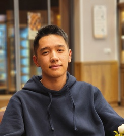

Xadyatullox Muhammadjonov
Accounting & finance · ACCA · Business analysis
I study Accounting and Finance at British Management University in Tashkent and I'm working through the ACCA qualification. Since 2023 I've run fuel operations and worked as a business analyst for a US logistics company, co-founded a small accounting firm, and have helped hoteliers get the most out of Exely.
- Degree
- BSc Accounting & Finance
- GPA
- 3.5
- ACCA
- FR passed · 7 exemptions
- Deloitte Case Competition
- High-priority winner
- EY Career Launch
- Finalist, 2025
- Languages
- Uzbek · Russian · English C1
Experience
Accounting, analysis and operations, mostly for US logistics businesses. The full detail is in my CV.
-
Technical Specialist
Exely
- Technical support for hoteliers setting up and using Exely's products.
-
Apr 2025 – Aug 2025
Co-Founder & Accountant
T&M Financials · USA, remote
- Co-founded a financial services company supporting US logistics businesses.
- Prepared and processed invoices for independent trucking clients using QuickManage and Amazon Relay.
- Built Excel trackers for expenses, income and profitability.
-
Feb 2024 – Sep 2025
Business Analyst
Green Group LLC · Tashkent and Virginia, USA
- Gathered business requirements and wrote functional and technical specifications.
- Cleaned and analyzed data, and built reports and dashboards for management.
- Supported API integrations, data workflows and TMS/CRM improvements.
-
Feb 2023 – Feb 2024
Fuel Department Manager
Green Group LLC · Tashkent and Virginia, USA
- Controlled fleet fuel costs and managed fuel cards: limits, issuance and fraud prevention.
- Negotiated fuel prices and planned cost-efficient fuel stops by route.
- Reported fuel KPIs: MPG, idle time and cost per mile.
Education
A BSc in Accounting and Finance, alongside the ACCA qualification.
British Management University
BSc Accounting and Finance · Tashkent · Sep 2023 – May 2027
- GPA 3.5
- ACCA-accredited
- Financial AccountingFinancial statements, journal entries, reconciliations, IFRS
- Management AccountingCost classification, job and process costing, cost-volume-profit analysis
- Business and TechnologyBusiness environment, organizational structures, ethics
- Financial Markets and InstitutionsStock and bond valuation, capital budgeting, investment analysis
- Microeconomics and MacroeconomicsEconomic principles and policy frameworks
ACCA qualification
One exam passed and seven conditional exemptions so far.
Applied Skills
- FRFinancial ReportingPassed · Sep 2026
- AAAudit and AssuranceConditional exemption
- TXTaxationConditional exemption
- PMPerformance ManagementConditional exemption
- LWCorporate and Business LawConditional exemption
Applied Knowledge
- FAFinancial AccountingConditional exemption
- MAManagement AccountingConditional exemption
- BTBusiness and TechnologyConditional exemption
Conditional exemptions come from my ACCA-accredited degree and become full exemptions when I graduate.
Recognition & leadership
-
Nov 2025
High-priority winner
Deloitte Case Competition
-
Apr 2025
Co-organizer
World Scholar's Cup, Tashkent regional round
Co-organized the event: check-ins, room allocation, volunteer teams and award distribution.
-
Mar 2025
Finalist
EY Career Launch
Reached the final.
Skills
Finance & accounting
- Financial statements and IFRS
- Journal entries and reconciliations
- Costing and cost-volume-profit analysis
- Invoicing and billing
- Expense and profitability tracking
Analysis
- Requirements and specifications
- Process mapping
- Data cleaning and reporting
- Dashboards and KPIs
- API and TMS/CRM integrations
Tools
- Excel, Word, PowerPoint
- Looker Studio
- QuickManage
- Amazon Relay
- Exely
Languages
- UzbekNative
- RussianProficient
- EnglishAdvanced, C1 (IELTS)
Let's talk
The quickest way to reach me is email. My full CV is one click away.